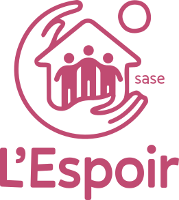

Service d'Accompagnement Socio-Éducatif
Un soutien éducatif,
au cœur de chaque famille.
Le SASE, c'est une aide concrète qui vient jusqu'à vous. Nos éducateurs se déplacent chez les familles pour aider à tenir le quotidien, renforcer les liens parent-enfant et traverser ensemble les moments difficiles.


Des familles accompagnées dans leur quotidien
Le SASE s'adresse aux familles qui traversent une période difficile et ont besoin d'un coup de main concret. On intervient sur mandat du SPJ ou à la demande volontaire de la famille, avec l'accord du mandant.
Les enfants concernés ont de 0 à 18 ans. Nos éducateurs viennent chez vous, dans votre quartier, dans votre quotidien.
Comment on travaille, concrètement
On vient chez vous
Nos éducateurs se déplacent à l'heure qui vous convient. Ça change tout de se retrouver dans votre cuisine plutôt que dans un bureau.
À votre rythme, pas le nôtre
La confiance, ça se construit au fil des visites. Vous restez maître de votre projet familial et on avance ensemble à votre rythme, sans imposer de cadre rigide.
Plusieurs regards, une équipe
Éducateurs et psychologue travaillent ensemble pour voir la situation dans sa globalité et ajuster le tir si quelque chose ne fonctionne pas.
Une petite équipe, très présente sur le terrain
Deux éducateurs et un psychologue. C'est l'équipe qui tourne autour du projet de chaque famille. Pas de grande structure anonyme : les mêmes visages reviennent à chaque visite, et ça change tout.
Ils font les visites à domicile et assurent le suivi concret, semaine après semaine.
Elle intervient dans les situations plus complexes et aide l'équipe à garder le cap.
Elle gère les mandats et les contacts avec le SPJ, pour que les éducateurs puissent se concentrer sur les familles.

Comment ça se passe en pratique ?
Chaque famille est différente, et le suivi s'adapte en conséquence. Voici comment ça se déroule habituellement :
Un éducateur vient chez vous pour faire connaissance et comprendre ce que vous traversez. Vous n'avez rien à signer à ce stade.
On pose ensemble ce qu'on veut travailler et à quelle fréquence se voir, en général 2 à 4 heures par semaine.
Les éducateurs viennent régulièrement chez vous. Tous les 3 mois environ, on fait le point ensemble avec la famille et le mandant pour voir ce qui a changé.
On ne s'arrête pas du jour au lendemain. La fin du suivi se prépare à l'avance pour que la famille puisse tenir seule sans que ça fasse trop abrupt.
Nous contacter
Pour une demande d'information ou une orientation vers le SASE.
Si vous êtes une famille souhaitant bénéficier du SASE sans mandat du SPJ, contactez-nous directement. Nous étudierons ensemble la possibilité d'une aide volontaire.
Ce qu'on nous demande souvent sur le SASE
Les questions qui reviennent le plus souvent de la part des familles accompagnées et des intervenants de l'aide à la jeunesse.
À qui s'adresse le SASE ?expand_more
Comment se passe une intervention à domicile ?expand_more
Qui décide qu'une famille bénéficie du SASE ?expand_more
Combien de temps dure un accompagnement ?expand_more
À quelle fréquence les éducateurs viennent-ils ?expand_more
Est-ce que le SASE coûte quelque chose aux familles ?expand_more
Une autre question ?
mail Nous contacterEnsemble, on continue.
Chaque contribution, petite ou grande, ponctuelle ou régulière, nous permet d'aller un peu plus loin avec les jeunes qu'on accompagne. Merci, vraiment.